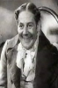

Country:United States, 70 minutes
Spoken languages:English
Genres:
Director(s):David MacDonald
Writer(s):H.F. Maltby, Charles Reade
Video Codec:Unknown
Number: 84


Certification:
Storyline:
An evil prison administrator cruelly abuses the inmates at his prison, until one day the tables are turned.
Cast: 

Medium: Original DVD,
Comments: Part of: 100 Greatest Horror Classics
Loaned: No
Aspect ratio: Unknown